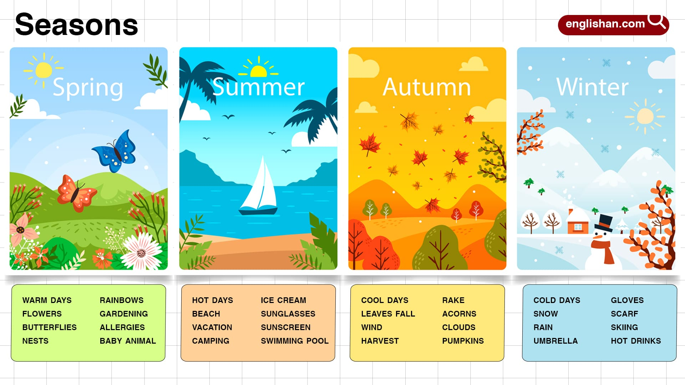
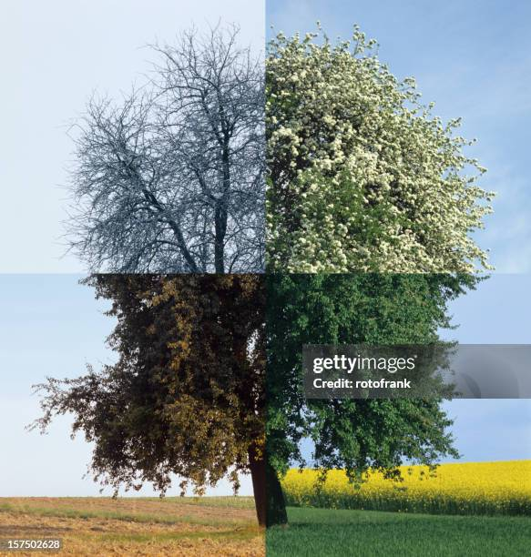

Seasons are periods of the year on Earth that are separated by climate differences; there are four seasons: spring, autumn, winter, and summer each one of them is unique by temperature, light, and the weather patterns. In some seasons you will have the least amount of sun-light in the winter solstice or with the most sun-light in summer solstice. Seasons are different in different places on Earth, for example, the North is in a different season than the South side because of Earth’s tilt.
If Earth is tilted towards the sun that side will be in summer with more sunlight or ultraviolet radiation during the day, than the other side which has less sun.
Seasons has a great impact on Earth’s ecosystem, because winter has less sun light and lower temperature, it makes it harder for plants to grow; in spring the flowers come out, plants sprout, and tree leaves unfurl; Summer has the hottest weather, and the most sun light so the plants grow faster and healthier; Autumn the temperature drops a bit, and the leaves of the trees fall off so they can get renewed. The more North or South you go the stronger the season's difference would be.


